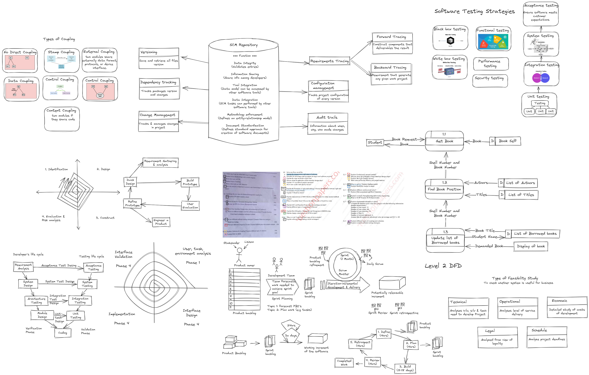

E&E QB
1. Describe various financing stage of any organization or company.

- Pre-Seed Funding:
- This is the earliest stage of financing, where the company is often little more than an idea for a product or service that has the potential to develop into a successful business down the road.
- Entrepreneurs spend most of this stage convincing investors that their ideas represent a viable investment opportunity.
- Seed Funding:
- At this stage, the startup will have increased costs as the founder incorporates the business and devotes more time.
- Seed funding is the first official stage of venture capital financing, and it typically involves raising funds from angel investors or venture capitalists.
- Series A Funding
- This stage of financing is typically used to fund the company's initial growth and expansion.
- The company has already launched its product or service and has a proven business model.
- Series B Funding
- This stage of financing is used to fund the company's expansion into new markets or to develop new products.
- The company has already established itself in the market and has a growing customer base.
- Series C Funding:
- This stage of financing is usually the last stage of venture capital financing.
- Businesses in this funding stage are doing well and require additional funding to help develop new products, expand into new markets, or even acquire other companies.
- Expansion Stage Financing:
- This financing follows first-stage financing and provides working capital for the initial expansion of a business that is producing and shipping product and has growing accounts receivable and inventories.
- Initial Public Offering (IPO):
- This is the stage where a company goes public and sells shares of its stock to the public for the first time.
- This stage of financing is typically used to raise a significant amount of capital to fund the company's growth and expansion.
2. What are the criteria of venture proposal management?
A venture capitalist expects a company to satisfy three general criteria before he or she will commit to venture.

- Company need to have a strong management team composed of individuals with solid experience and background.
- The product and market opportunity must be unique having a differential advantage or three to five unique selling pro-positions in a growing market.
- The business opportunity must have significant capital appreciation.
3. What are the main objective & function of venture capital?

Venture capital is a form of private equity that provides funding, technical, or managerial expertise to startups and early-stage emerging companies with little to no operating history but significant potential for growth.
- Providing Capital:
- Venture capital firms provide funding for new companies in the early stages of development.
- This funding is typically used to hire employees, rent facilities, and begin designing a product.
- Offering Technical and Managerial Expertise:
- Venture capital firms offer technical and managerial expertise to startups.
- Assessing Investment Opportunities:
- Venture capitalists use specific criteria to evaluate new venture proposals and decide whether to invest in them.
- Growing Portfolio Companies:
- Venture capitalists aim to grow their portfolio companies to the point where they become attractive targets for acquisitions or IPOs.
- The VC firm's goal is to increase the value of the startup, then profitably exit the investment by either selling the fund's stake or via an initial public offering (IPO).
- Spurring Innovation:
- Venture capital plays a crucial role in spurring innovation by providing funding to new businesses that do not have access to stock markets and do not have enough cash flow to take on debts.
4. Short note on SWOT Analysis.

SWOT stands for Strengths, Weaknesses, Opportunities, and Threats.
SWOT analysis is a strategic planning technique used to identify and analyze the internal and external factors that can affect a business or project.
Components of SWOT Analysis
- Strengths
- Strengths describe what an organization excels at and what separates it from the competition: a strong brand, loyal customer base, a strong balance sheet, unique technology, and so on.
- Weaknesses
- Weaknesses stop an organization from performing at its optimum level.
- They are areas where the business needs to improve to remain competitive: a weak brand, higher-than-average turnover, high levels of debt, an inadequate supply chain, or lack of capital.
- Opportunities
- Opportunities refer to favorable external factors that could give an organization a competitive advantage.
- Threats
- Threats refer to factors that have the potential to harm an organization.
How to Do a SWOT Analysis
- Step 1: Determine Your Objective
- Objective in mind, a company will have guidance on what they hope to achieve at the end of the process.
- Example: The SWOT analysis should help determine whether or not the product should be introduced
- Step 2: Gather Resources
- A company should begin by understanding what information it has access to, what data limitations it faces, and how reliable its external data sources are.
- Step 3: Compile Ideas
- The group of people assigned to performing the analysis should begin listing ideas within each category.
- Internal Factors
- What occurs within the company serves as a great source of information for the strengths and weaknesses categories of the SWOT analysis.
- External Factors
- What happens outside of the company is equally as important to the success of a company as internal factors.
- Internal Factors
- The group of people assigned to performing the analysis should begin listing ideas within each category.
- Step 4: Refine Findings
- By refining the thoughts that everyone had, a company can focus on only the best ideas or largest risks to the company.
- Step 5: Develop the Strategy
- Members of the analysis team take the bulleted list of items within each category and create a synthesized plan that provides guidance on the original objective.
5. Explain the term supply chain management.

Supply chain management (SCM) is the process of managing the flow of goods and services from the raw materials stage to the final delivery of the product to the customer.
5 Phases of Supply Chain Management
- Planning Plan and manage all resources required to meet customer demand for a company’s product or service.
- Sourcing Choose suppliers to provide the goods and services needed to create the product.
- Manufacturing Organize the activities required to accept raw materials, manufacture the product, test for quality, package for shipping and schedule for delivery.
- Delivery and Logistics Coordinate customer orders, schedule deliveries, dispatch loads, invoice customers and receive payments.
- Returning Create a network or process to take back defective, excess or unwanted products.
Key features of effective supply chain management
- Connected: Being able to access unstructured data from social media, structured data.
- Collaborative: Improving collaboration with suppliers increasingly.
- Cyber-aware: The supply chain must harden its systems and protect them from cyber-intrusions and hacks, which should be an enterprise-wide concern.
- Cognitively enabled: Most of the supply chain is automated and self-learning.
- Comprehensive: Analytics capabilities must be scaled with data in real time. Insights will be comprehensive and fast.
6. Explain e-commerce & different type of e-commerce.

E-commerce, short for electronic commerce, refers to the buying and selling of goods and services over the internet. It involves the exchange of data or currency to process a transaction between a buyer and a seller.
E-commerce operates in different forms, and here are the different types of e-commerce:
- Business-to-Consumer (B2C):
- This type of e-commerce involves companies selling their products or services directly to the end-user, the consumer who needs it.
- This is the most common type of e-commerce, and it includes online retailers such as Amazon, Walmart, and Target.
- Business-to-Business (B2B):
- This type of e-commerce involves businesses selling their products or services to other businesses. The buyer often resells the products to the consumer. B2B e-commerce includes companies such as Alibaba, which connects businesses with suppliers.
- Consumer-to-Consumer (C2C):
- This type of e-commerce involves consumers selling products or services to other consumers.
- This type of e-commerce is facilitated by online marketplaces such as eBay, Etsy, and Craigslist.
- Consumer-to-Business (C2B):
- This type of e-commerce involves consumers selling their products or services to businesses.
- This type of e-commerce is common in the freelance industry, where individuals offer their services to businesses that need them.
- Business-to-Government (B2G):
- This type of e-commerce involves businesses selling their products or services to government agencies.
- This type of e-commerce is common in the defense industry, where businesses sell their products to the government.
- Consumer-to-Government (C2G):
- This type of e-commerce involves consumers selling their products or services to government agencies.
- This type of e-commerce is common in the freelance industry, where individuals offer their services to government agencies that need them.
7. Explain step of human resources management.

Human resources management (HRM) is a critical function in any organization, and it involves creating personnel policies and procedures that support business objectives and strategic plans.
Steps of Human Resources Planning:
- Analyze Objectives
- Analysis of objectives which will help us to find out right track for our organization.
- Sometimes giving additional work to other employee with some remuneration will might be perfect as cost cutting.
- Inventory / Current Human Resources
- Identification of current manpower which calculate the shortfall / discrepancy between demand supply and by which we can identified the current inventory shortfalls.
- Forecast the demand
- Forecasting for demand is necessary for every organization because it will help us to bridging the gap between demand and supply of manpower.
- Estimate Gaps
- Estimation of gap, plays a vital role in HRP because when our estimation meets the real data then we can achieve our targets.
- Formulate Plan
- Preparation of plan to cope up with short fall of supply of manpower need a power flexible plan which will lead towards target achievement.
- Implementation Plan
- Implementation of plan for targeted results.
- Monitor Control and feedback
- Finally, monitor and control of implementing plan as well as feedback reflects our actual situation from our target.
8. Explain the term CRM in detail.

Customer Relationship Management (CRM) is a strategy that companies use to manage interactions with customers and potential customers.
It involves the use of technology to organize, automate, and synchronize sales, marketing, customer service, and technical support processes.
Types of CRM systems

- Operational CRM systems
- Operational CRM are designed to help execute sales, marketing, and customer service functions.
- Analytical CRM systems
- Analytical CRM systems capture, store, and analyze customer data to provide insights into how customers interact with your business, allowing you to assess the effectiveness of marketing, sales, and customer service efforts and adjust your strategy accordingly.
- Collaborative CRM systems
- It improve customer experience and streamline business processes by facilitating communication between departments.
Types of CRM systems

How are CRMs useful for different kinds of businesses?
- B2B
- From managing an account's contact information to staying up to date with business deals, payments, and reports, B2B companies do best with a CRM platform in place.
- B2C
- A multichannel CRM tool with features like lead management, instant customer surveys, marketing automation, and more helps B2Cs reach out to their customers more easily, thereby boosting productivity and increasing sales.
- Enterprises
- With sophisticated features like workflow management, advanced analytics, territory management, and sales and marketing automation, an enterprise CRM system can help reduce the time salespeople spend on mundane tasks.
9. Define e-business, Types of e-business & Challenges of e-business

E-business, short for electronic business, refers to the conduct of business processes on the internet.
E-business is a broader term than e-commerce, which refers specifically to the buying and selling of goods or services over the internet.
Types of E-business
Types of E-business:
- Business-to-Consumer (B2C):
- This type of e-business involves companies selling their products or services directly to the end-user, the consumer who needs it.
- This is the most common type of e-business, and it includes online retailers such as Amazon, Walmart, and Target.
- Business-to-Business (B2B):
- This type of e-business involves businesses selling their products or services to other businesses.
- The buyer often resells the products to the consumer. B2B e-commerce includes companies such as Alibaba, which connects businesses with suppliers.
- Consumer-to-Consumer (C2C):
- This type of e-business involves consumers selling products or services to other consumers.
- This type of e-commerce is facilitated by online marketplaces such as eBay, Etsy, and Craigslist.
- Consumer-to-Business (C2B):
- This type of e-business involves consumers selling their products or services to businesses.
- This type of e-commerce is common in the freelance industry, where individuals offer their services to businesses that need them.
- Business-to-Government (B2G):
- This type of e-business involves businesses selling their products or services to government agencies.
- This type of e-commerce is common in the defense industry, where businesses sell their products to the government.
- Consumer-to-Government (C2G):
- This type of e-business involves consumers selling their products or services to government agencies.
- This type of e-commerce is common in the freelance industry, where individuals offer their services to government agencies that need them.
Challenges of e-business

- Intangibility: The online marketplace is intangible, and the products cannot be touched or examined before purchasing.
- Massive Competition: More and more companies are entering the e-commerce market to sell their products globally, thus increasing the level of competition.
- Technical Issues: Technology is the base of e-commerce, and lack of technical knowledge is the primary reason for failure. Thus, it involves a considerable cost to outsource such activities.
- 24X7 Internet Access: It is necessary to have uninterrupted internet connectivity for the seller to process the orders, which is challenging to have in remote areas.
- Requires Patience: The companies selling products or services online need to keep patience and wait for the desired response since it takes time to gain attention and visibility from customers in e-commerce.
- Lack of Trust: Due to the intangible existence of e-commerce business, there is a lack of trust in shopping and making online payments among the customers.
10. Short note on SRM & PRM
11. What is ERP? & Components of ERP.
Enterprise Resource Planning (ERP) is a software platform that companies use to manage and integrate the essential parts of their businesses.
Many ERP software applications are critical to companies because they help them implement resource planning by integrating all the processes needed to run their companies with a single system.
Components of ERP

- Finance:
- The finance component of ERP software keeps track of all financial data, including accounts receivable, accounts payable, general ledger, costs, budgets, and forecasts.
- It helps to keep a record of cash flow, lower costs, increase profits, and ensure that all bills are paid on time.
- Human Resources (HR):
- The HR component of ERP software handles all personnel-related tasks for managers and employees.
- It is responsible for automated payments to employees, payment of taxes, generating reports, and managing employee benefits.
- Logistics and Manufacturing:
- The logistics and manufacturing component of ERP software manages the production process, including inventory management, production planning, and scheduling.
- It also manages the supply chain, including procurement, supplier management, and logistics.
- Supply Chain Management:
- The supply chain management component of ERP software manages the flow of goods and services from suppliers to customers.
- It includes inventory management, order management, and logistics.
- Customer Relationship
- Management (CRM): The CRM component of ERP software manages customer interactions and relationships.
- It includes sales management, marketing automation, and customer service management.
- Business Intelligence (BI):
- The BI component of ERP software provides insights into business operations and performance.
- It includes data analytics, reporting, and forecasting capabilities.
12. Explain e-marketplace & types of e-marketplace.

An e-marketplace, also known as an online marketplace, is a virtual platform that connects buyers and sellers for commercial transactions.
E-marketplaces can be classified into different types based on their business models.
Types of e-marketplaces

- Business-to-Business (B2B):
- This type of e-marketplace connects businesses with other businesses for commercial transactions.
- Examples of B2B e-marketplaces include Alibaba and ThomasNet.
- Business-to-Consumer (B2C):
- This type of e-marketplace connects businesses with individual consumers for commercial transactions.
- Examples of B2C e-marketplaces include Amazon, Flipkart, and eBay.
- Consumer-to-Consumer (C2C):
- This type of e-marketplace connects individual consumers with other individual consumers for commercial transactions.
- Examples of C2C e-marketplaces include eBay, Etsy, and Poshmark.
- Peer-to-Peer (P2P):
- This type of e-marketplace connects individuals with other individuals for commercial transactions.
- Examples of P2P e-marketplaces include Airbnb and Uber.
- Rental:
- This type of e-marketplace connects businesses or individuals with other businesses or individuals for rental transactions.
- Examples of rental e-marketplaces include Airbnb and Turo.
13. Short note on Globalization
Globalization refers to the increasing interconnectedness and interdependence of world cultures and economies.
It involves the spread of the flow of financial products, goods, technology, information, and jobs across national borders and cultures.
Here are some key points about globalization:

- Free trade is a way for countries to exchange goods and resources. This means countries can specialize in producing goods where they have a comparative advantage (this means they can produce goods at a lower opportunity cost).
- Free movement of labor Increased labor migration gives advantages to both workers and recipient countries.
- Increased economies of scale Production is increasingly specialised.
- Greater competition Domestic monopolies used to be protected by a lack of competition. However, globalisation means that firms face greater competition from foreign firms.
- Increased investment Globalisation has also enabled increased levels of investment. It has made it easier for countries to attract short-term and long-term investment.
14. Explain in detail good business plan
A good business plan is a fundamental document that any new business should have in place prior to beginning operations.
It is a roadmap that outlines the company's goals and how it intends to achieve them.
A well-considered and well-written business plan can be of enormous value to a company.
Here are some key components of a good business plan:

- Executive Summary:
- The executive summary is the first section of the business plan and should provide a brief overview of the company, its products or services, and its goals.
- Products and Services:
- This section should provide a detailed description of the company's products or services, including their features, benefits, and unique selling points.
- Marketing Strategy and Analysis:
- This section should describe the company's target market, competition, and marketing strategy.
- Financial Planning:
- This section should include financial projections, such as income statements, balance sheets, and cash flow statements.
- Operations and Management:
- This section should describe the company's organizational structure, management team, and day-to-day operations.
- Market Research:
- This section should provide a detailed analysis of the industry and market in which the company operates.
Risk Analysis:
This section should identify potential risks and challenges that the company may face and explain how the company plans to mitigate those risks.
15. Evaluate new-venture proposals.
Venture capitalists use specific criteria to evaluate new venture proposals and decide whether to invest in them.
- Management Skill and History: Venture capitalists look for a strong and experienced management team that can execute the business plan and lead the company to success.
- Market Size/Growth: Venture capitalists expect business plans to include a detailed market size analysis. Market sizing should be presented from the "top down" and from the "bottom up.".
- Rate of Return: Venture capitalists invest in startups with the expectation of a high rate of return.
- Market Niche/Position: Venture capitalists evaluate the business concept and plan to determine if it is innovative and has a competitive edge..
- Financial History: Venture capitalists evaluate the financial history of the startup to determine if it has a clear path to profitability and can generate returns.
- Venture Location: Venture capitalists evaluate the location of the startup to determine if it is in a favorable business environment and has access to resources and talent.
- Growth Potential: Venture capitalists evaluate the growth potential of the startup to determine if it can scale and generate significant revenue and profits in the future.
- Barriers to Entry: Venture capitalists evaluate the barriers to entry in the market to determine if the startup has a competitive advantage and can protect its market position.
- Size of Investment: Venture capitalists evaluate the size of the investment to determine if it is appropriate for the stage of the startup and the potential for returns.
- Stake of Entrepreneur: Venture capitalists evaluate the stake of the entrepreneur to determine if they have a significant interest in the success of the startup and are committed to its growth.
16. Explain important strategic management in venture capital.
Strategic management is a critical aspect of venture capital, and it involves the development and implementation of strategies that help venture capitalists achieve their investment objectives.
Here are some important strategic management considerations in venture capital:

- Investment Criteria:
- Venture capitalists use specific criteria to evaluate new venture proposals and decide whether to invest in them.
- Portfolio Management:
- Venture capitalists must manage their portfolio of investments to ensure that they are achieving their investment objectives.
- Value-Add:
- Venture capitalists aim to add value to their portfolio companies by providing them with access to their network of partners and experts.
- Risk Management:
- Venture capitalists must manage the risks associated with their investments.
- Exit Strategies:
- This involves identifying potential buyers or IPO opportunities and developing strategies to maximize the return on investment.
- Investment Strategy:
- This involves identifying target industries, geographies, and investment stages that are most likely to generate high returns.
All the images: 
AI Convo: https://www.perplexity.ai/search/Describe-various-financing-2PT53a3AREKyy08IIC8y1w?s=c